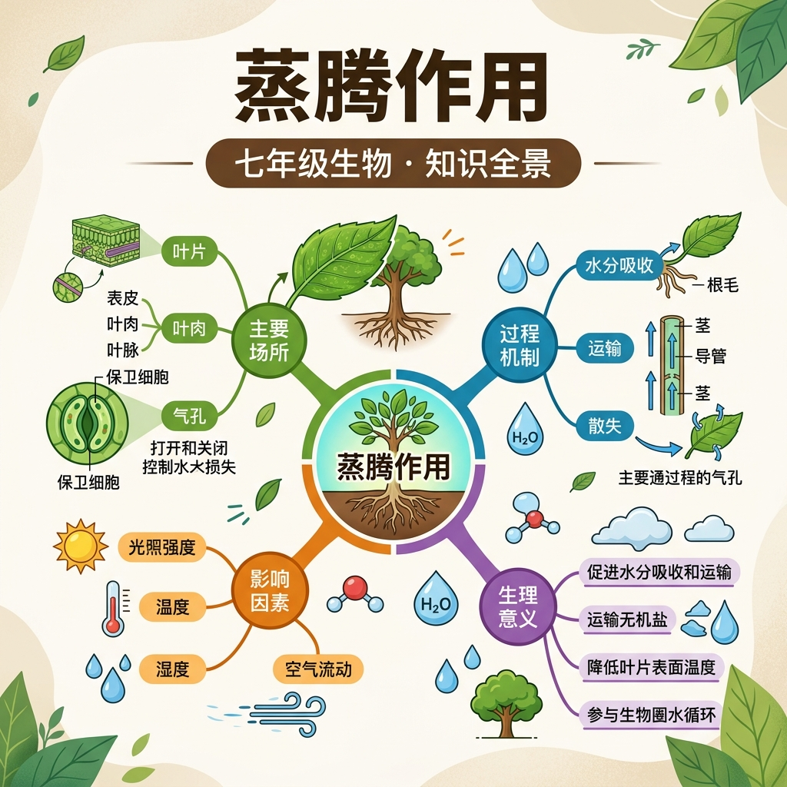

一棵大树每天能蒸腾数百升水，这不是浪费，而是植物精巧的水分运输动力系统。
根从土壤吸收水分，水通过导管向上运输到叶片。叶片上有气孔，可以和外界进行气体交换。
但水分从根运到十几米高的树冠，靠什么驱动力？为何炎热天气移植树木要去除大量叶片？
因此我们学习蒸腾作用——水分从叶片气孔散失的过程，理解它如何驱动水分在植物体内运输。
📌 核心目标：描述蒸腾作用的全程路径；分析影响蒸腾速率的因素；解释蒸腾作用对植物和环境的意义。
💧 完整路径：土壤水分 → 根毛细胞（渗透吸水）→ 皮层细胞 → 木质部导管 → 茎导管 → 叶片导管 → 叶肉细胞间隙 → 气孔下腔 → 气孔 → 大气（以水蒸气形式散失）
蒸腾拉力是水分从根向上运输到高处的主要动力
水分蒸发吸热，降低叶片温度，防止被灼伤
水分运输的同时，携带溶解在水中的无机盐到达各组织
调节各因素，观察蒸腾速率变化：
| 影响因素 | 对蒸腾速率的影响 | 原因 |
|---|---|---|
| 气温升高 | 蒸腾速率增大 | 水分子运动加快，蒸发加速 |
| 光照增强 | 蒸腾速率增大 | 气孔开放程度增大，散失水分增多 |
| 风速增大 | 蒸腾速率增大 | 及时带走水蒸气，维持浓度差 |
| 空气湿度升高 | 蒸腾速率减小 | 大气与叶片间水蒸气浓度差减小 |
植物蒸腾是水循环的重要环节，大片森林的蒸腾作用可以影响局部气候，增加降水。
树木蒸腾吸收大量热量，使林区气温较低、空气湿润。城市绿化树木可降低城市热岛效应。
蒸腾作用产生的拉力促使根吸水，水携带无机盐通过导管向上运输，供各器官利用。
🔑 记忆要点：蒸腾作用 = 水分散失 + 降温 + 驱动水运输。植物每天有90%以上吸收的水分通过蒸腾散失，只有不到10%用于光合等生命活动。